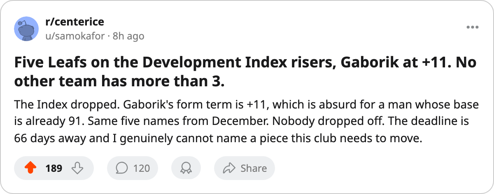

TOR
TORFive names, one club: the Bureau's Index says Toronto's young men are still pulling north
Gaborik at +11, four teammates at +7 or +8. No other roster in the league carries more than three risers.
 Sam OkaforLeafs beat reporter · Queen City Telegram
Sam OkaforLeafs beat reporter · Queen City Telegram
The League Scouting Bureau's Development Index, published this week on Center Ice, lists 5 Toronto players among its risers.  Marian Gaborik99 sits at +11, the highest single form term on the club and tied for second in the entire Index.
Marian Gaborik99 sits at +11, the highest single form term on the club and tied for second in the entire Index.  Rostislav Klesla87,
Rostislav Klesla87,  Stanislav Chistov87, and
Stanislav Chistov87, and  Jamie Lundmark81 each carry +8.
Jamie Lundmark81 each carry +8.  Rick Nash85 is at +7.
Rick Nash85 is at +7.
No other club has more than 3 risers on the current edition.  Chicago Blackhawks carries 3: Igor Radulov80 at +11,
Chicago Blackhawks carries 3: Igor Radulov80 at +11,  Steve McCarthy81 at +8, Ari Ahonen89 at +7. The next cluster is 2 names:
Steve McCarthy81 at +8, Ari Ahonen89 at +7. The next cluster is 2 names:  Los Angeles Kings and
Los Angeles Kings and  Edmonton Oilers. Every other franchise manages one or zero.
Edmonton Oilers. Every other franchise manages one or zero.
Gaborik's number is the one to circle. His Book base is 91, his Index-adjusted overall reads 99, and the gap between those two digits is the +11. He's played 23 games, logged 14 points in 22.2 minutes a night, and carries a $11.90M salary over 5 remaining contract years. The Bureau put him at 91 before the season started. The Index has him at 99 now, the highest displayed overall on Toronto's roster.
Klesla's +8 moves his overall from a base of 78 to 87. He's played every game, 43 of 43, at 25.5 minutes a night, and his 18 points (5 goals, 13 assists) come at $0.90M on a contract with 1 year left. No other defenceman in the league carries a higher overall at that price.
Chistov's +8 lifts him from 78 to 87 as well, with 31 points in 43 games at 20.7 minutes a night. Nash's +7 takes him from 77 to 85, with 26 points in 43 games at 15.8 minutes. Neither man's minutes have changed since December; the form term is doing the work, not the usage.
Lundmark is the outlier in this group. His 35 games played, 8.0 minutes a night, and 9 points put him at the bottom of the rotation. His overall sits at 81 on a base of 74, which puts him on the risers table despite not cracking a power-play unit or a penalty-killing pair. The Index doesn't care about ice time; it measures the form term against the base.
The five-man count on Toronto's side means 5 of the 20 named risers in the entire Index carry a Leafs sweater. The December edition flagged 5 as well. No one has dropped off. The form is holding.
The trade deadline, what the calendar has as the trade deadline, sits 66 days away. A roster with its youngest core all trending north at the same time is a roster that doesn't need to move a piece in March. The Index says the next move for this club is patience.
